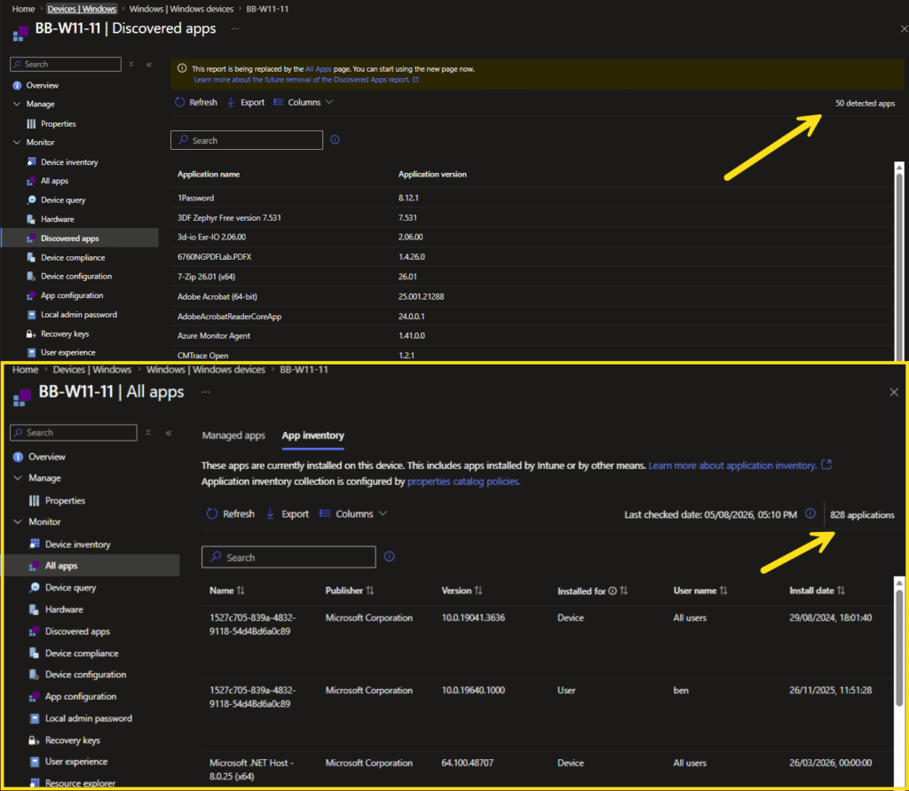
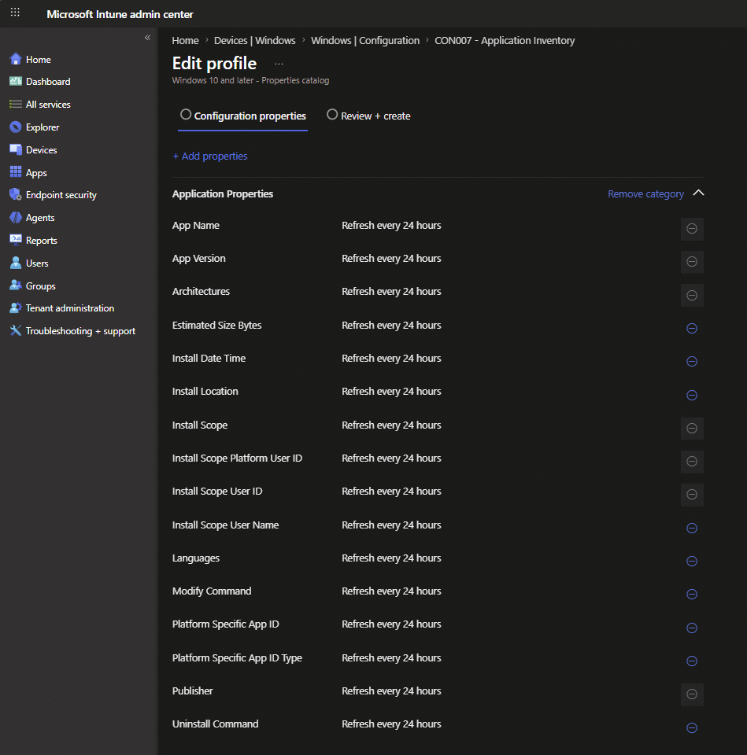
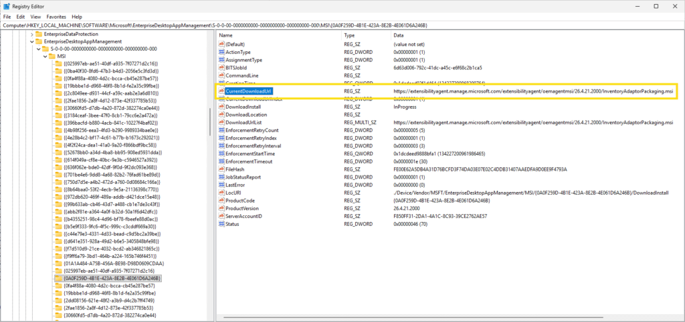
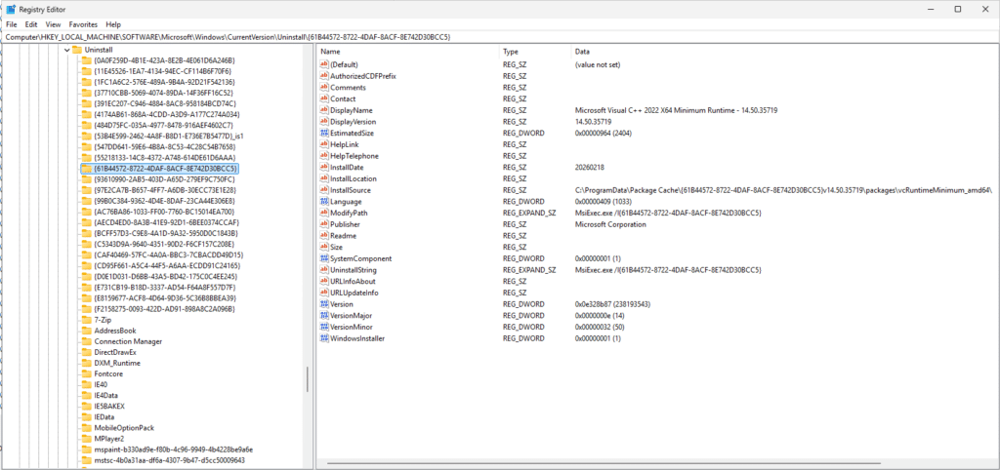
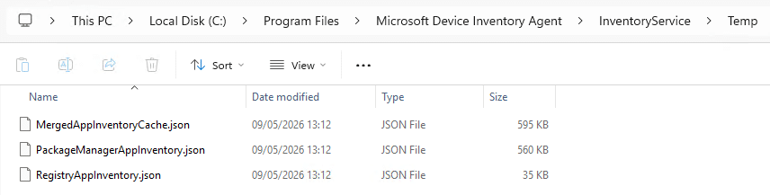
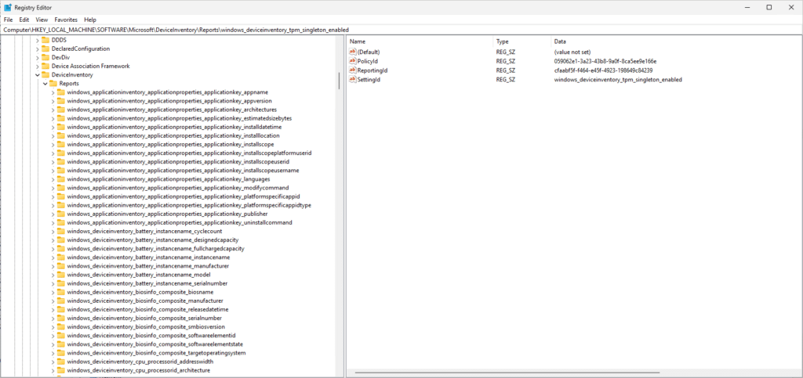
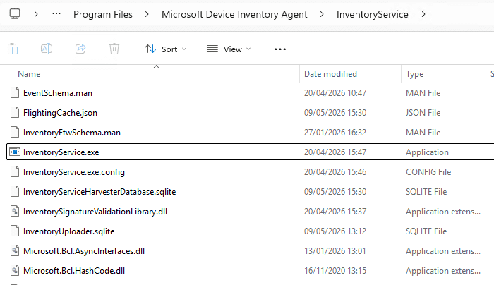
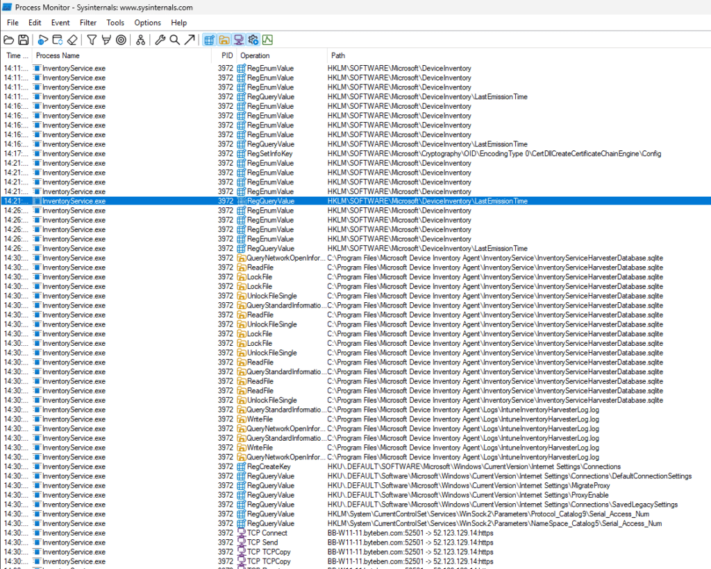
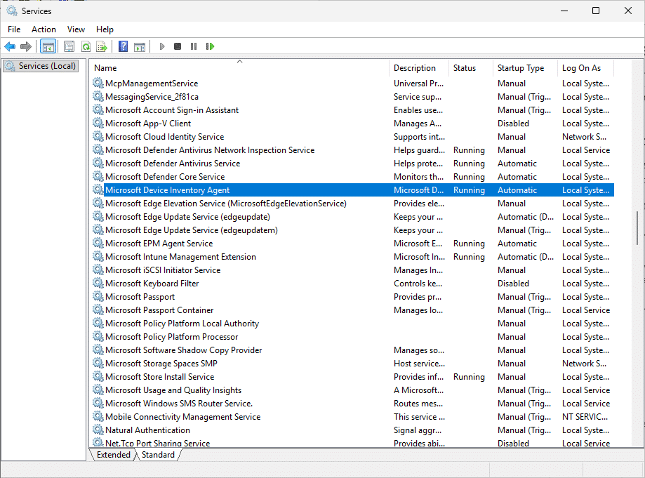

App inventory is Intune’s new feature for collecting detailed application data from Windows devices, and it leaves the old Discovered apps report in the proverbial dust.
Pull up a chair, pour yourself something stronger than a martini, and let me show you what I found when I went poking around. How does the new feature actually work, what’s collecting the data (another agent), and what admins should know that isn’t in the docs.
50 apps walk into a bar
Here’s the same device, showing the old Discovered Apps report, bless its heart and the new App Inventory report.

50 vs 828. Same machine, same century, same universe.
You’ll also notice the giant deprecation banner at the top of the Discovered Apps report. Microsoft hasn’t given a kill date, but the writing is on the wall.
This report is being replaced by the All Apps page. You can start using the new page now. Learn more about the future removal of the Discovered Apps report.
So what changed? Let me walk you through it, then we’ll meet the new(ish) agent in town.
Data got a glow up
The old Discovered Apps report had 2 columns: Application name and Application version. That’s it. That’s the report. The data has always been pretty, but pretty useless in some regards too. As someone who loves the madness of apps, I never got the data I actually needed, like 64-bit vs 32-bit, is it the MSI or EXE variant. Is it installed for everyone or only in a specific users profile. The old inventory was always very limited becuase it relied on the Win32_InstalledWin32Program class to inventory apps from a device.
The new App Inventory page has roughly seventeen columns and they’re all useful. To pick a few favourites:
- Installed for
Device or User. Finally we know whether something is machine-wide or per-profile. - User name / User Entra ID / SID
3 flavours of “who installed this” - Architectures
x86, x64, ARM64, Neutral. Useful when you’re chasing down a stubborn 32-bit installer in a 64-bit world. - Install date / Install location / Estimated size
- Uninstall command / Modify command
The actualMsiExec.exe /X{...}strings or paths to the EXE. - Package name
MSI product code for Win32 apps, package full name for Store apps. - Last updated
So you know how fresh this view is
Setting it up
Here’s the most important thing to know up front, because it’ll trip people up…
App Inventory does not auto-collect. Unlike Discovered Apps, which just happens whether you want it to or not, App Inventory needs an explicit policy deployed to the device. No policy, no data.
Before you do anything, the device needs to be:
- Windows 10 or 11
- Microsoft Entra joined
- Enrolled in Intune
- Not in the Microsoft Azure operated by 21Vianet sovereign cloud (GCC High is supported, 21Vianet is not)
Im going to verbatim mince through the advice given here App inventory for Windows devices – Microsoft Intune | Microsoft Learn
To create the policy:
- Intune admin center > Devices > Manage devices > Configuration > Create > New policy.
- Platform: Windows 10 and later.
- Profile type: Properties catalog.
- Click Create.
- Name it with your favorite naming convention.
- In Configuration settings, click + Add Properties, tick ApplicationProperties, and choose your properties.
7 properties are required and pre-ticked, you can’t deselect them even if you wanted to. The rest are optional. My recommendation… tick everything for the first run. You can always trim later, and you don’t know what you’re missing if you don’t see it.

7. Deploy the policy to your devices.
Another Agent?
This is where it gets a little interesting, and where I’d assumed wrong for the first hour of poking.
I’d assumed that the Intune Management Extension was doing the inventory work, because it always has done in the past. IME is doing none of it.
App Inventory is the work of an entirely separate agent, with its own service, its own install location, and its own log files.
The Microsoft Device Inventory Agent is not the new kid on the block though. Its actually been with us for a while helping with device inventory. My good friend Rudy wrote a post on this back in late 2024, https://call4cloud.nl/intune-device-inventory-agent/
What seems to be happening now is that Microsoft are reusing that same inventory agent for app inventory as well. And when you think about it, that does make sense.
Both device inventory and app inventory are driven through the Properties Catalog CSP model. So rather than building yet another client-side component, Microsoft appear to be extending the use of the existing Microsoft Device Inventory Agent to collect this additional inventory data.

If you had not previously targeted the device inventory properties catalog to your devices, you may not have seen the Microsoft Device Inventory Agent installed before. But once app inventory is enabled and targeted through an MMP-C sync, the agent should be installed as part of that flow.
What the agent actually does
For app inventory, 2 collection sources, run and are then merged.
1. Win32 apps (the registry pass).
This is the agent’s bread and butter. It enumerates the standard Windows uninstall keys, in three passes:
HKLM\SOFTWARE\Microsoft\Windows\CurrentVersion\Uninstall64-bit view (native)HKLM\SOFTWARE\Microsoft\Windows\CurrentVersion\Uninstall32-bit view (Wow6432Node-redirected). Same key path, different view, different apps.HKEY_USERS\<sid>\SOFTWARE\Microsoft\Windows\CurrentVersion\Uninstallfor every loaded user profile on the machine.
For each subkey it pulls DisplayName, DisplayVersion, Publisher, InstallDate, InstallLocation, UninstallString, ModifyPath, EstimatedSize, Language. Standard fare for anyone who’s ever written an inventory script.

2. Store and MSIX apps (the package manager pass).
This one tripped me up because Microsoft’s docs say “package manager API” and most of us read that as WinGet. It’s not. The agent calls the OS-level Windows.Management.Deployment.PackageManager.FindPackages() API, which has been in Windows since the ark grounded on land and has nothing to do with WinGet.
Both results get merged and de-duplicated, then cached locally. The merged result is what gets uploaded. You can get a sneak peek at the data because its stored in json format as well as a local sql lite database.

How the policy gets to the agent
This is the bit that I think is most worth understanding, because it’s where troubleshooting starts.
Properties Catalog policies don’t ride on the classic OMA-DM channel like your old MDM CSPs. They use the new MMP-C / Declared Configuration channel. On the device side, Windows itself has a component that receives the declared configuration document and writes the policy contents into the registry at:

Early rabbit holing indicates the Intune-shipped agent, InventoryService.exe, watches that registry key for changes. Policy lands in registry, agent picks it up, agent harvests, agent uploads.


Syncing
The big question… how often does this thing actually run?
The official line from Microsoft is “triggered with the MMP-C sync/check-in cycle” and “multiple times per day for active devices.” So it’s not the classic 8-hour MDM cycle, MMP-C is more frequent than that.
But there’s a wrinkle that isn’t in the docs. The agent itself maintains an internal cache of the merged app data with an internal TTL. Even when MMP-C wakes the agent up more often than that, the agent doesn’t necessarily re-enumerate the registry and re-call the package manager API every time. Sometimes it just replays its cached snapshot through whatever properties the current policy is asking for.
In practical terms… if you uninstall something and then watch App Inventory like a hawk waiting for it to disappear, you might be waiting a little while even if MMP-C check-ins fire several times in between. But we are talking hours….nothing like the 7 day delay to wait for apps to be removed from the Discovered Apps report.
First sync is a full upload. Everything after is delta..makes sense. Only new, changed, or removed apps get sent up.
The report is available in the Intune admin center only, on the device view.
Stuff not in the docs (yet)
The 1000-app hard cap
One limitation worth knowing about is the 1000 app limit per device.
This does not seem to be publicly documented by Microsoft and could change, but for those who like to “peek” at dll’s, the agent has a constant called MaxApplicationCount = 1000
So, it looks like the inventory agent will only process up to 1000 apps on a device. Im off to the Patch My PC Catalog to test this theory.
For most devices, that probably will not matter. But it could become relevant on shared devices, developer machines, lab devices, or older devices that have collected a lot of installed apps over time. My lab device has 828 apps listed, so perhaps more of us will stumble across this limit that we would care to imagine. Lets see it play out.
There is also a specific error code for this scenario E_APPLICATION_COUNT_EXCEEDED = 0x80511001
So if app inventory looks incomplete, and the device has a lot of installed apps, search the inventory agent logs for like 0x80511001.
2 log files for troubleshooting, not one
If apps aren’t showing up, knowing which log to check first will save you twenty minutes of squinting at the wrong file.
|
Log location |
What it tells you |
|
|
Windows-side. Did the policy actually arrive on the device via MMP-C? |
|
|
Agent-side. Did the agent run, harvest, merge, and upload? |
If InventoryAdaptor.log is silent, the policy isn’t arriving. Investigate MMP-C delivery, group assignment, prerequisites etc.
If InventoryAdaptor.log shows policy arrivals but HarvesterLog.log is silent, the service isn’t running. Check the Microsoft Device Inventory Agent in services.msc.

Wrap-Up
The new Enhanced App Inventory isn’t just a richer better cousin of Discovered Apps. It’s a different mechanism end to end, separate agent, separate delivery channel, separate logs, separate registry footprint. Once you understand the moving parts, troubleshooting becomes much less mysterious.
The missing gap here on everyones lips is this – will app inventory not be accesible via Microsoft Graph in the same way we can’t pull aggregated device inventory. My true hope here is that Microsoft expose this data on something like the Intune Reporting Endpoint via Graph so we can actually pull this data to do intersting things with. I wait with bated breath…